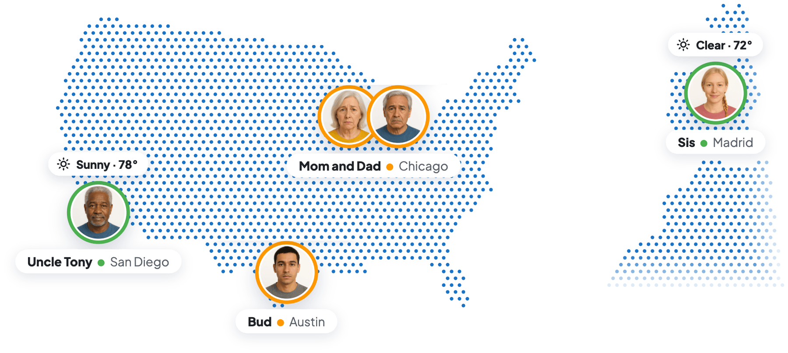

Like360but forAdults

Your kids grew up.Your family app should grow up too.
Looop sends a heads-up when a Loved One's day looks unusual, so you can trust them more and still know when to call.
"Do I really need to see every turn?"
The driving years are over
Your family looks different now.
When the kids got their licenses, you wanted to see every drive. Now they're in college or out on their own. Maybe your parents live separately or a few states away. Maybe your aunt lives alone, and nobody stops by every day.
You don't need to follow their every move. You want them to have their independence, and you want to know when their day looks unusual.
 When they were 16
When they were 16Your family grew up.
Your app should too.
Most family apps were built for parents of young kids. Looop is built for all your Loved Ones across cities, states, and countries.


"Is everyone okay today?"
Most days, all is well
And you don't have to check to know it.
Mom's at home. Dad's at the gym. Sis is at the campus library. Uncle Tony is up at the lake house. Everyone is having a Typical Day, so Looop stays quiet and you get on with yours. When you do look, it's one screen: everyone, okay or not, at a glance. No panning around a map.
No news really is good news.

For life after the learner's permit
Which one keeps you up at night?

"She's off to college."
Trust them more
You don't need a report on every drive anymore. You'd just like to know if a day looks off, and otherwise let her live it.

"He moved to the big city."
Safe from afar
His new neighborhood is busier than the one he grew up in. Get a heads-up when crime is reported near him, in all 50 US states.

"Help isn't nearby anymore."
Parents on their own
Know when Dad's been home longer than usual for him, or when he arrives at a hospital or ER.

"Aunt Ira lives alone."
Someone living solo
Nobody stops by every day. Get a nudge if her phone hasn't been picked up in hours, or if her day looks different.

"Mom moved to the coast."
A different forecast
A storm on her coast won't show up in your forecast. Looop sends severe weather alerts in more than 50 countries.

"Everyone counts on me."
The one in the middle
Kids in two cities, parents in two homes. One calm screen, and one heads-up when someone needs a call.
"Is Dad still getting his walks in?"
Health and fitness, in one place
Health & Fitness sharing is available if you need it.
Maybe Mom hasn't slept well all week, or Dad has skipped his usual walks. With Health & Fitness sharing, Looop gives you a heads-up when something is off for them.
Health
Heart rate, breathing rate, and sleep. Get a heads-up about an unusually high or low heart rate or an unusual breathing rate.
Fitness
Steps, walking, and workouts, from a morning run to a session at the gym. See whether Mom is as active as usual for her.
Based on your family's situation, you may want to add Health & Fitness sharing. It's optional, and works with Apple Health and Apple Watch.
"Is Mom okay today?"
The whole shape of their day
Most family apps are built around a map: they answer "Where is she?" Looop answers "Is Mom okay today?" It takes a holistic approach to family care: weather, crime, spending, health, fitness, activity, and the shape of each day.
- What's around them. Severe weather heading their way, in more than 50 countries, and crime reported nearby, in all 50 US states.
- Arrivals that matter. Know when they arrive at a hospital or ER, a police station, or an airport.
- How long they've been there. A nudge when they've been home much longer than is normal for them.
- Unusual Day. A gentle nudge when driving, walking, or phone use doesn't fit their own normal routine, or their phone hasn't been picked up in hours.
- Spending, if they link an account. An optional heads-up about an unusually large charge, with a threshold you set. That can be an early sign of a scam.
Each day, all of it comes together in one answer: a Typical Day, or an Unusual Day that might be worth a call.
"Did Dad make it to the cabin?"
Know they got there, without asking
No "text me when you get there" required.
Save the places that matter, like home, the cabin, or a dorm. You get a heads-up when a Loved One arrives or leaves. Dad left home, caught his flight, finished the drive, and got to the cabin.

Our Privacy Promise
Your family's data isn't for sale
Family privacy, protected.
We never sell your data, and we don't work with advertisers.
Read Our Privacy Promise- Never for Sale
- No Ads, Ever
- Alerts, Not Tracking
- Leave Anytime
"I'm an adult. I don't need to be watched."
A word for the grown-ups you love
You're right. Looop doesn't watch you.
Looop sends your family alerts, and only when something seems off. You live your day. They get fewer "where are you?" texts, and you get fewer "just checking on you" calls.
- You decide whether to join. Looop works by invitation, so nobody signs you up without your knowing.
- Health & Fitness sharing and spending alerts are available. Add them if they fit your family.
- You can change your mind. Leave a group anytime.
Looop helps you know when to check in. It doesn't detect emergencies. If you think someone is in danger, call 911.


Peace of mind for you,
independence for them
Made for the grown-ups you love.
Invite them, let them live their lives, and know when it's worth a call.
Know they're safe, across any distance.